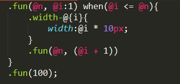

原文连接:https://www.cnblogs.com/rope/p/10736580.html
一、Vue的生命周期
生命周期就是指一个对象的生老病死的过程。
用Vue框架，熟悉它的生命周期可以让开发更好的进行。
所有的生命周期钩子自动绑定 this 上下文到实例中，因此你可以访问数据，对属性和方法进行运算。这意味着，你不能使用箭头函数来定义一个生命周期方法 (例如 created: () => this.fetchTodos())。这是因为箭头函数绑定了父上下文，因此 this 与你期待的 Vue 实例不同，this.fetchTodos 的行为未定义。
生命周期的钩子函数，就是vue实例在和一定的时间点去执行的函数
生命周期总共有11个函数，首先看看官网的图，详细的给出了vue的生命周期，其中这八个是比较常见的:
它可以总共分为8个阶段：
l beforeCreate（创建前）
l created（创建后）
l beforeMount(载入前)
l mounted（载入后）
l beforeUpdate（更新前）
l updated（更新后）
l beforeDestroy（销毁前）
l destroyed（销毁后）
l 还有三个是：activated()、deactivated()、 errorCaptured()
1.1 beforeCreate()
在实例初始化之后，数据观测 (data observer) 和 event/watcher 事件配置之前被调用。
此时data、dom也不可见！
1.2 created() ***
在实例创建完成后被立即调用。在这一步，实例已完成以下的配置：数据观测 (data observer)，属性和方法的运算，watch/event 事件回调。然而，挂载阶段还没开始，$el 属性目前不可见。
此时data可见，可以在这个生命周期发送ajax，等回调成功后,将数据放进data中！dom还是不可见.
1.3 beforeMount()
在挂载开始之前被调用：相关的 render 函数首次被调用。
此时data可见 $el DOM依然不可见，没什么用，created 完全可以代替。
1.4 mounted() ***
el 被新创建的 vm.$el 替换，并挂载到实例上去之后调用该钩子。如果 root 实例挂载了一个文档内元素，当 mounted 被调用时 vm.$el 也在文档内。
此时data 和 dom都可见，生命周期执行完毕，工作中会在这个生命周期里面调用methods里面发送ajax的函数，意思是等dom加载完毕之后操作一些方法或发送ajax，跟写在created 没什么区别。
1.5 beforeUpdate() 和 updated() ***
l beforeUpdate： 数据更新时调用，发生在虚拟 DOM 重新渲染和打补丁之前。适合在更新之前访问现有的 DOM，比如手动移除已添加的事件监听器。
l updated：由于数据更改导致的虚拟 DOM 重新渲染和打补丁，在这之后会调用该钩子。当这个钩子被调用时，组件 DOM 已经更新，所以你现在可以执行依赖于 DOM 的操作。然而在大多数情况下，你应该避免在此期间更改状态。如果要相应状态改变，通常最好使用计算属性或 watcher 取而代之。
1.6 activated 和 deactivated
这两个生命周期写在子组件里面，控制子组件的上下树，能激活两个生命周期。
activated ：keep-alive 组件激活时调用
deactivated ：keep-alive 组件停用时调用
1.7 beforeDestroy() 和 destroyed()
beforeDestroy ：实例销毁之前调用。在这一步，实例仍然完全可用
destroyed ： Vue 实例销毁后调用。调用后，Vue 实例指示的所有东西都会解绑定，所有的事件监听器会被移除，所有的子实例也会被销毁。
如何：触发这两个生命周期钩子。
没用。
1.8 errorCaptured()
没用。
App.vue父组件：


<template>
<div>
<h1>{{a}}</h1>
<button @click="add">+</button>
<!--父组件使用v-if 控制组件上下树，触发组件的生命周期函数-->
<keep-alive v-if="isShow">
<Child></Child>
</keep-alive>
</div>
</template>
<script>
import Child from "./components/Child.vue"
export default{
data(){
return {
a:100,
isShow:true
}
},
methods:{
add(){
this.a++;
this.isShow = !this.isShow;
}
},
components:{
Child
}
beforeCreate(){
console.log("初始化之后，el和data并未初始化" + this.a);
},
created(){
console.log("组件创建完成，完成了data 数据的初始化，el没有" + this.a);
console.log("组件创建完成，完成了data 数据的初始化，el没有" + this.$el);
},
beforeMount(){
console.log("挂载之前，完成了data 数据的初始化，el没有 " + this.a);
console.log("挂载之前，完成了data 数据的初始化，el没有" + this.$el);
},
mounted(){
console.log("挂载之后，完成了el的绑定" +this.a);
console.log("挂载之后，完成了el的绑定" +this.$el);
}
beforeUpdate(){
console.log("数据更新前状态："+ $(this.$el).find("h1").text());
},
updated(){
console.log("数据更新后状态（完成了渲染）：" + this.a);
}
}
</script>
Child.vue子组件：
<template>
<div>
<h1>我是子组件</h1>
<zisun></zisun>
</div>
</template>
<script>
import zisun from "./zisun.vue";
export default{
components:{
zisun
},
activated(){
console.log("组件激活了");
},
deactivated(){
console.log("组件停用了");
},
beforeDestroy(){
console.log("组件销毁前");
},
destroyed(){
console.log("组件销毁后");
},
errorCaptured(){
console.log("子组件报错了");
}
}
</script>孙子组件：
<template>
<h1>我是孙子组件</h1>
</template>二、CSS预处理（动态样式表）
2.1 CSS预处理器简介
做前端，处理CSS是你的特长，随着工程的增大，CSS的预处理越来越重要，或者要维护我们的css，工作会越来越困难，造成这些困难的很大原因源于CSS 是一门非程序式语言，没有变量、函数、SCOPE（作用域）、嵌套等概念。
什么是CSS预处理？
CSS预处理器定义了一种新的语言，其基本思想是，用一种专门的编程语言，为CSS增加了一些编程的特性，将CSS作为目标生成文件，然后开发者就只要使用这种语言进行编码工作。通俗的说，CSS预处理器用一种专门的编程语言，进行Web页面样式设计，然后再编译成正常的CSS文件，以供项目使用。CSS预处理器为CSS增加一些编程的特性，无需考虑浏览器的兼容性问题，例如你可以在CSS中使用变量、简单的逻辑程序、函数等等在编程语言中的一些基本特性，可以让你的CSS更加简洁、适应性更强、可读性更佳，更易于代码的维护等诸多好处。
CSS预处理器技术已经非常的成熟，而且也涌现出了很多种不同的CSS预处理器语言，比如说：Sass、LESS、Stylus，还有postCSS插件等。
2.2 Less使用和安装
Less、stylus是Nodejs工作流工具，SASS需要安装ruby。
以Less举例，sass、stylus自学即可。
Less 是一种动态样式语言，它使用类似CSS的语法，为CSS赋予了动态语言的特性，如变量、继承、数学运算、函数等，更方便CSS的编写和维护。
LESS可以在多种语言、环境中使用，包括浏览器、桌面客户端、服务端。
API手册：
http://www.bootcss.com/p/lesscss/
在全局安装less，这是一个CLI工具。其实，你并不需要安装，因为后面直接用webpack结合less即可。
npm install -g less
或者安装在项目中：
npm install --save-dev less
查看版本：
lessc -v2.3 Less变量和嵌套
Less可以让我们以嵌套的方式写CSS，直接在父元素选择器中嵌套子元素选择器，它会自动编译成后代选择器。
定义变量：@变量名:变量值
示例：@yanse:red;
调用：div{color:@yanse;}
编译：div{color:red;}
第一步：创建.less文件，开始写less语法：
@a:200px;
div{
width: 200px;
height: @a;
ul{
width: @a;
height: @a;
li{
float: left;
width: 30px;
height: 30px;
background: orange;
&.cur{background: red;}
&:hover{background: green;}
&:before{content: "";}
}
}
}&表示它自己
第二步：用lessc命令编译这个文件，生成css
lessc 01.less 01.css编译后的结果：
div {
width: 200px;
height: 200px;
}
div ul {
width: 200px;
height: 200px;
}
div ul li {
float: left;
width: 30px;
height: 30px;
background: orange;
}
div ul li.cur {
background: red;
}
div ul li:hover {
background: green;
}
div ul li:before {
content: "";
}2.4 Less数学运算
在less中任何数字、颜色或变量都可以参与数学运算，运算建议包裹在括号()中。
2.5 Less混合（包含）
在less中可以定义一些通过的属性集为一个class，然后在另一class调用这些属性
.border{border:1px solid #f40;}
如果需要在其他css中引入通过的属性集，只要在任意class中像这样调用即可：
div{.border}注意：任何class、id或元素属性都可以以同样的方式引入。
2.6 Less带参数的混合（包含）
在less中，还可以像函数一样定义一个带参数的属性集：
.border(@radius){
-webkit-border-radius:@radius;
-moz-border-radius:@radius;
-ms-border-radius:@radius;
-o-border-radius:@radius;
border-radius:@radius;
}
在其他class中这样调用：
div{ .border(5px); }2.7 Less带默认参数的混合（包含）
2.8 Less的循环

2.9 Less和webpack结合
我们希望在Vue、React项目中使用less，此时就需要webpack在打包的时候顺便进行less编译。
必须要装less依赖和3个loader依赖，分别是css-loader、style-loader、less-loader。
安装loader依赖：
npm install --save-dev less
npm install --save-dev less-loader
npm install --save-dev css-loader
npm install --save-dev style-loader
安装完依赖，要配置webpack.config.js文件：
参照：https://www.npmjs.com/package/less-loader
var path = require('path');
const {VueLoaderPlugin} = require("vue-loader"); //最新版webpack需要引入此插件
module.exports = {
...
//配置webpack的模块插件
module:{
// 关于模块配置
rules: [
...
{
test: /\.less$/,
use: [
{loader: "style-loader"},//翻译行内CSS
{loader: "css-loader"}, //翻译外链CSS
{loader: "less-loader"} //将Less编译为CSS
]
}
]
},
resolve: {
alias: { //配置别名
'vue$': 'vue/dist/vue.esm.js' // 用 webpack 1 时需用 'vue/dist/vue.common.js'
}
},
//最新版webpack需要引入此插件
plugins:[
new VueLoaderPlugin()
]
};
如果遇见webpack报错，在项目中安装一下webpack的项目依赖即可：
npm install --save-dev webpack配置完成后，使用时在style标签里加上lang="less"就可以写less的代码了(style标签里加上scoped为只在此作用域有效)
组件中使用less样式表
<style lang="less" scoped>
@a:200px;
div{
width: @a;
height: @a;
background: red;
}
</style>
或引入外链.less文件：
<style lang="less" scoped>
@import "./01.less";
</style>或
<style lang="less" scoped src="./01.less"></style>三、全局组件
前面两天我们使用的都是局部组件，哪个页面要用，就在哪个页面引用，然后再使用。如果不想每次使用都要引用，想直接使用的情况下就需要用到全局组件。
语法：
Vue.component("页面使用的名字", import引入时的名字);第一步：在app文件夹新建一个plugins文件夹（它表示插件的意思），在文件夹中新建一个components.js文件，这个文件中放的都是全局组件。把components文件夹中的.vue组件都引入到当前js文件向外暴露。
components.js:
import Hehe from "../components/Hehe.vue";
import Haha from "../components/Haha.vue";
export default function(Vue){
Vue.component("MyHehe", Hehe);
Vue.component("MyHaha", Haha);
}
第二步：在app.js中import引入这个js文件，同时使用Vue.use(插件名) → 安装插件的意思
import Vue from 'vue';
import App from './App.vue';
import components from './plugins/components.js';
Vue.use(components); //注册全局组件
new Vue({
el : "#app",
render : (h)=> h(App)
})
然后就可以在任何页面中，直接使用全局组件，全局组件中的代码改真名就怎么写。
App.vue
<template>
<div>
<h1>{{a}}</h1>
<MyHehe></MyHehe>
<MyHaha></MyHaha>
</div>
</template>
<script>
export default {
data(){
return {
a : 100
}
}
}
</script>四、自定义指令（directive）
4.1自定义局部指令
除了核心功能默认内置的指令（v-model、v-if、v-show等），如果不够用，Vue允许注册自定义指令。
如果想封装局部指令，组件中接受一个directives的选项：
App.vue
<template>
<div>
<h1 v-color="'red'" v-height="100" >我是App页面</h1>
<h2 v-color:aa.bb.cc>我是App页面</h2>
</div>
</template>
<script>
export default {
directives : {
color : {
inserted(el,binding){
console.log(binding)
el.style.color = binding.value
//$(el).css(binding.name, binding.value);
}
},
height : {
inserted(el,binding){
if(binding.value){
el.style.height = binding.value + "px";
}else{
el.style.height = 200 + "px";
}
}
}
}
}
</script>
需求：给页面写一个不固定的高，根据手机屏幕的高度，去计算内容区域的高度
<template>
<div>
<header>
<ul>
<li>新闻</li>
<li>军事</li>
</ul>
</header>
<div class="content" v-height="50" v-style="{color:'green',fontSize:'50'}" v-color.red>
<p>爱上对方就哭了</p>
<p>爱上对方就哭了</p>
...
<p>爱上对方就哭了</p>
<p>爱上对方就哭了11</p>
</div>
</div>
</template>
<script>
export default {
directives : {
color : {
inserted(el,binding){
el.style.color = Object.keys(binding.modifiers)[0];
}
},
height : {
inserted(el,binding){
var height = document.documentElement.clientHeight - binding.value;
el.style.height = height + "px";
}
},
style : {
inserted(el,binding){
var a = Object.keys(binding.value)[0];
var b = Object.keys(binding.value)[1];
$(el).css({
[a]:binding.value[a],
[b]:binding.value[b] + "px"
})
}
}
}
}
</script>
<style lang="less">
header{ul{overflow: hidden;list-style:none;li{float: left;width: 50%;height: 50px;border-right: 1px solid #000;background: orange;box-sizing: border-box;}}}.content{overflow-y:scroll;}
</style>然后就可以在模板中任何元素身上使用自定义的v-color、v-height、v-style指令属性。
如果指令需要多个值，可以传入一个JavaScript对象字面量。记住，指令函数能够接受所有合法的 JavaScript 表达式。
4.2全局自定义指令
全局指令 和 全局组件的封装方式一样，也是在plugins文件夹中新建directives.js文件。
自定义全局指令想在哪用就在哪用。
main.js
import Vue from 'vue';
import App from './App.vue';
import directives from './plugins/directives.js';
Vue.use(directives); //注册全局指令
new Vue({
el : "#app",
render : (h)=> h(App)
})
directives.js
export default function(Vue){
Vue.directive('style', {
inserted(el,binding){
var a = Object.keys(binding.value)[0];
var b = Object.keys(binding.value)[1];
// $(el).css({color:'green', fontSize:50})
$(el).css({[a]:binding.value[a], [b]:binding.value[b]})
}
})
Vue.directive('color', {
inserted(el,binding){
// el.style.color = binding.value
el.style.color = Object.keys(binding.modifiers)[0]
}
})
Vue.directive('height', {
inserted(el,binding){
var height = document.documentElement.clientHeight - binding.value;
el.style.height = height + "px";
}
})
}